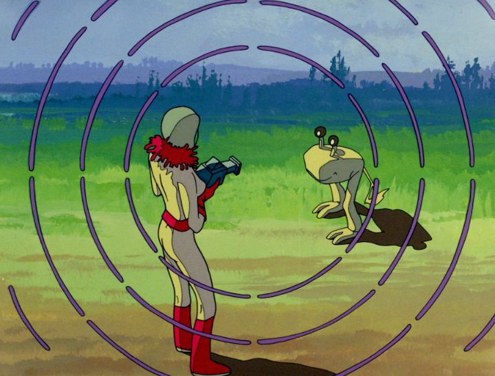

As the informative on-disc commentary states at the beginning, the 1984 Romanian film "Delta Space Mission" is "about as obscure as you can get for a restoration." I couldn't even find a Wikipedia.org page for it! Made at a time when indpendent animated film was growing around the world, it was a statement from a studio that wanted to make something their country could be proud of, something that could be enjoyed the world over. A tie-in television series was also produced (the Bluray I have includes two episodes, listed as "shorts"). But today, it would have remained forgotten, had boutique American distributor Deaf Crocodile not stepped in to work with the Romanian Film Archive and Film Centre to restore a 4K scan (they partnered with Vinegar Syndrome to release the home-media version in the US).Given the country and the time and the limited budget and limited training available, it makes sense that "Delta Space Mission" uses animation techniques that look a cross between Hanna-Barbera and 1980's Japanese anime. This is used to emulate a story inspired by "Star Trek" and the movie "Fantastic Planet." This is to say that the movie doesn't look great from a technical standpoint, despite some ambitious scene (which we'll discuss in a moment). And unfortunately, the story is also a bit barebones. The movie is really for historical fans, for fans of obscure sci-fi, and for the "trippy" sequences only imaginable through animation.Set in some fantastical future on a space station, a team of pilots are preparing for their next mission. Alma, a beautiful blue-skinned reporter (and her alien dog Tin) show up to cover the event, and on a tour she sees the control center, a large round supercomputer that runs the station. She's struck by the beauty of the orb, in a materialistic way, and exclaims out loud how she wishes she could keep it for herself. The computer's A.I. overhears Alma, and self-learns to have the same sentiment: it loves Alma and wishes to keep her for itself. The rest of the adventure is of Alma trying to escape the armies of monsters and robots the computer sends after her, with the pilots from the station teaming up to rescue her. There's a simple but effective sci-fi short story with the power and falacies of A.I. here. But there's only about five minutes worth of story, and the rest is simply the adventure of the chase. Perhaps for the best, the cartoonish dog Tin gets more screen-time than any other character, his scenes playing like watching Snoopy or Garfield outwitting alien creatures for several minutes straight. Struggling to keep attention, it was easy to lose track of where the story was thanks to odd pacing. Due to wooden acting, in a foriegn language of course, and minimalist music, the movie is rather dull, feeling like it's twice as long as the short 71-minute runtime. It doesn't help that I've always found the science-fiction genre to be dull in general.  In terms of production, "Delta Space Mission" is made as traditionally as it gets, while using all the tricks of the period. Characters are animated both with and without rotoscoping. Background skies are static canvases of paint. Ambitious elements come in the form of strange alien monsters, and flying spaceships that move through 3D landscapes (painted in 2D of course, likely a time-consuming scene). But the character animation suffers the most: faces have virtually no emotion or expression throughout, and even lip-syncing (in the original Romanian language) is all over the map, completely mismatched with dialogue. This is true even during moments of jokes and banter between the pilots: it's easy to miss that a given scene was meant to be funny. Alma's complex hair-shape makes her in particular difficult to watch whenever she's on screen. I'm conflicted, since there are moments of solid animation here, a slight cut above television animation from the time. In terms of fluidity, it's better than even most feature-length anime from the time. But it's inconsistent in technique and full of errors, perhaps a side-effect of inexperience. At least the restoration on the Bluray looks good and clean, and includes a commentary and new interview that is as fascinating, if not moreso, than the movie.I like this trend of obscure foreign-language animated films from decades past making a comeback on home video, often for the first time, to American and international audiences. I hope it continues. But I want this primarily for the educational and historical value. I don't know that "Delta Space Mission" will cause anyone from a modern audience to fall in love with it.
- "Ani" More reviews can be found at : https://2danicritic.github.io/ Previous review: review_Deca-Dence Next review: review_Demon_Slayer_-_Kimetsu_No_Yaiba